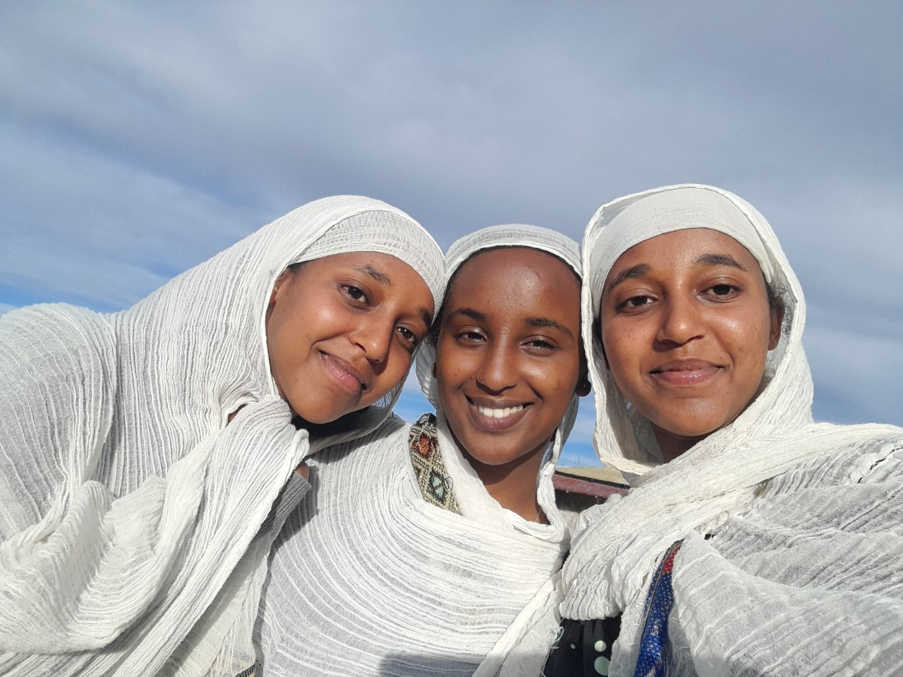

📚 Reading Fictions

My all time favorite books are:
-
 Hiwot Teffera's Book that Binds Aspects of Ethiopian Christianity Education and Philosophy
Hiwot Teffera's Book that Binds Aspects of Ethiopian Christianity Education and Philosophy -
 Sydney Sheldon's. Medical thriller tells the story of three female doctors trying to prove themselves in a profession dominated by men.
Sydney Sheldon's. Medical thriller tells the story of three female doctors trying to prove themselves in a profession dominated by men. -
 English title of a 19th-century Russian work, recounting the narrator's journey as a mendicant pilgrim while practicing the Jesus Prayer.
English title of a 19th-century Russian work, recounting the narrator's journey as a mendicant pilgrim while practicing the Jesus Prayer.
🎥 Theatrical art and Drama

As someone who finds solace in engaging in deep introspection while facing a mirror, the stage becomes my realm where I can fearlessly express my innermost thoughts and ideas.
- Yodit Gudit
- The story of Ethiopian monarch, who on her reign executed several civilians.
- Bela Lebelha
- The story of two neighbors dueling on a shared land.
Dramas I participated in:

🚲 Riding a bike

Although I initially had a fear of riding a bicycle, it has now become a hobby that has allowed me to confront my fears and grow stronger.
♱ Participating in the Holy Liturgy


The liturgies attributed to St. John Chrysostom and St. Basil the Great are the eucharistic liturgies most generally used in Orthodox worship.